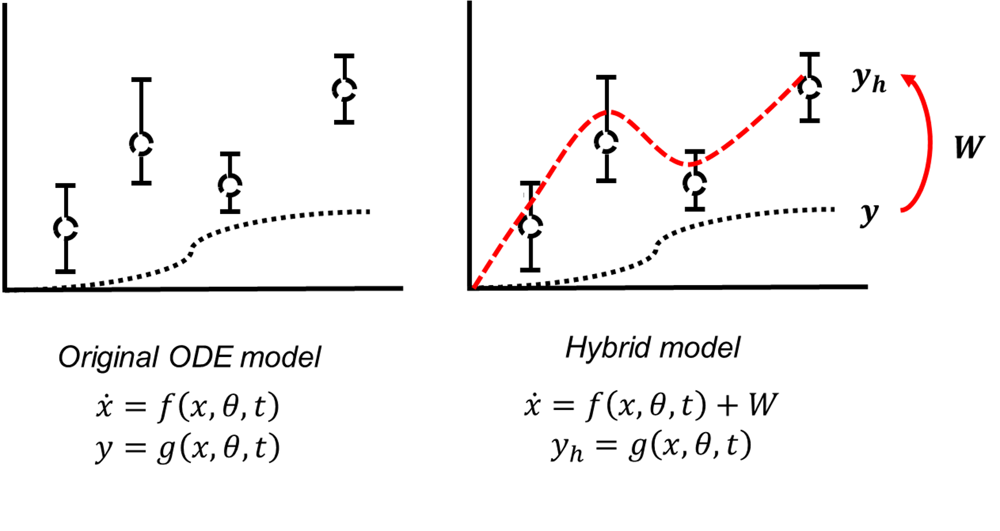
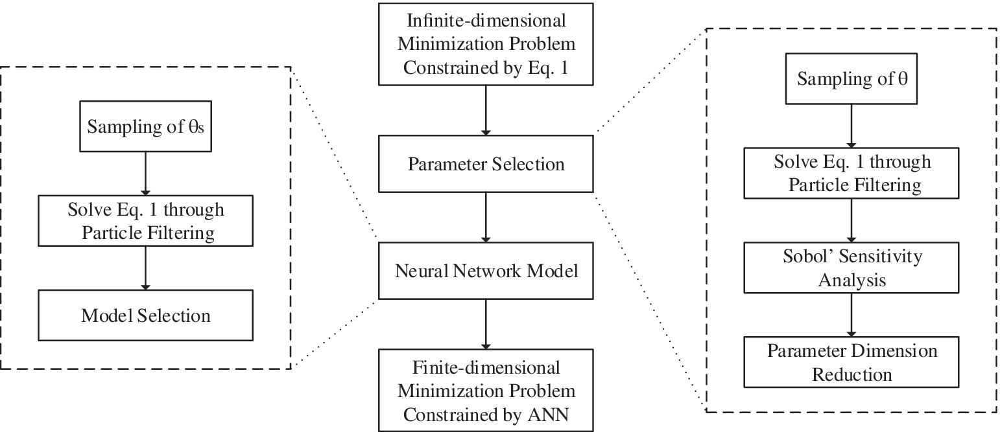
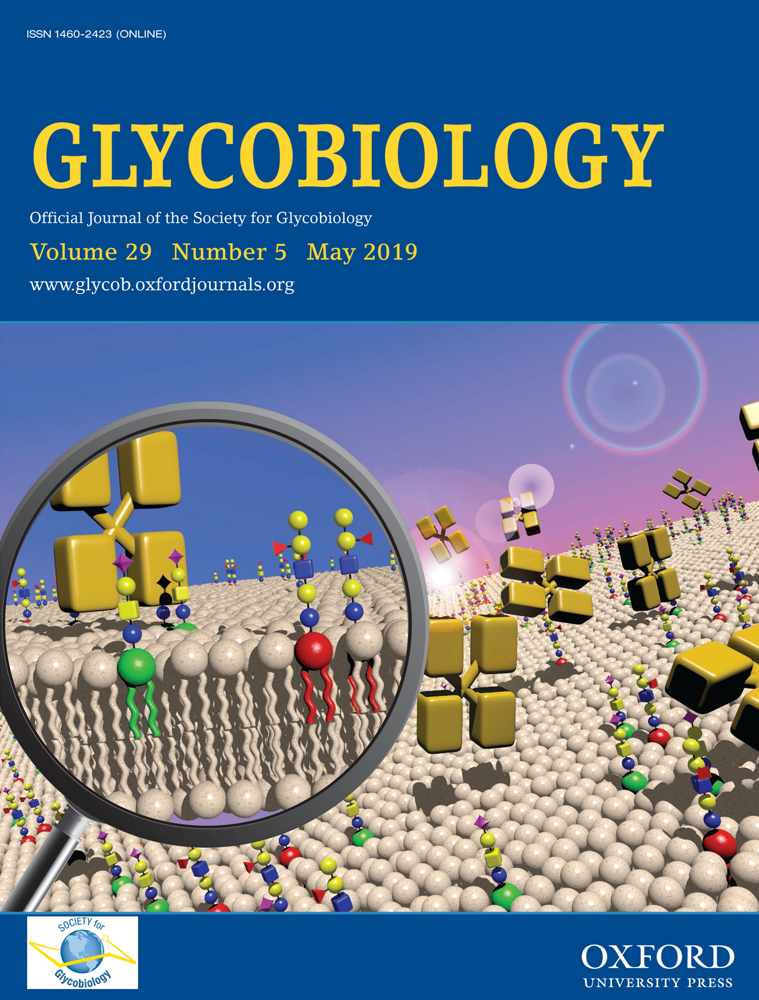
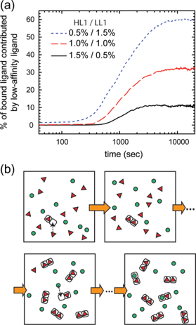
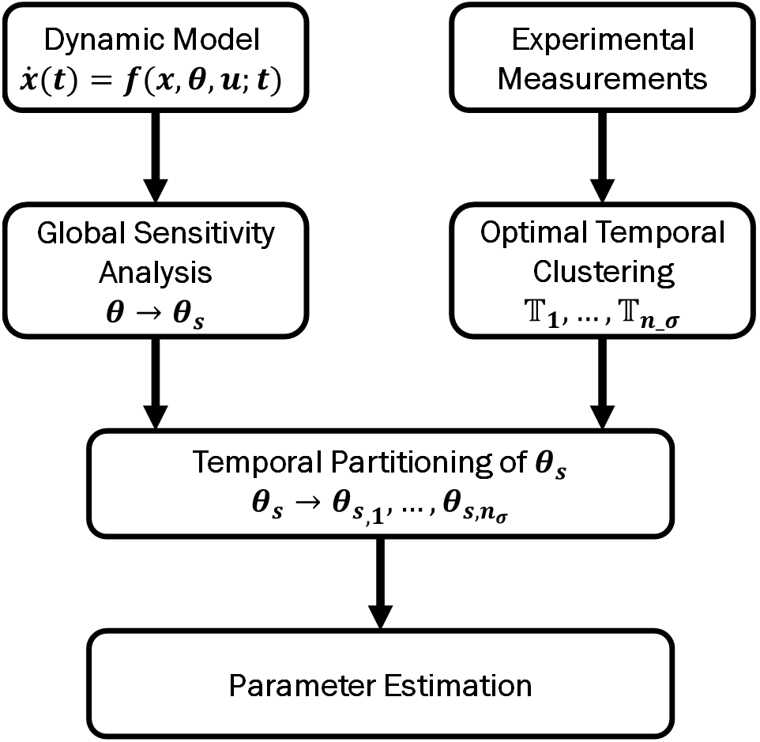
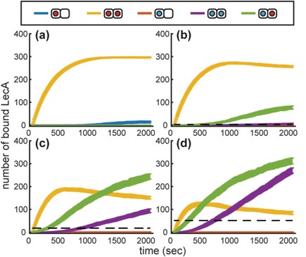
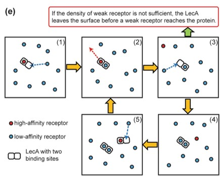
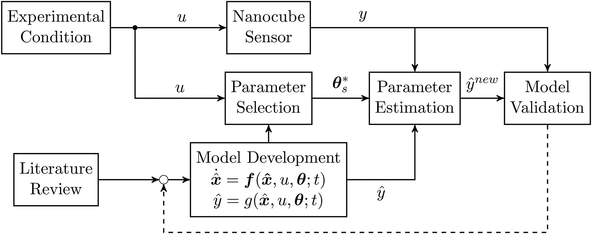
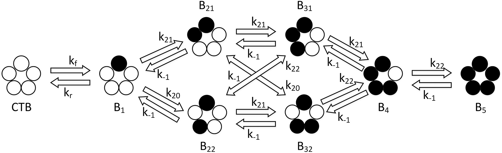
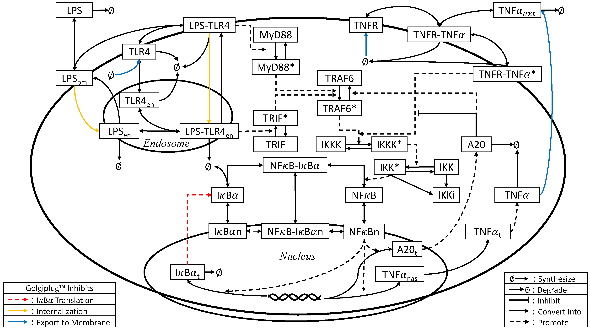

I am a postdoctoral researcher at Deparment of Biomedical Engineering, Duke University, NC.
Education
Ph.D. (2015~2020): Chemical Engineering, Texas A&M University, College Station
Theis Title: A systems biology approach to model intracellular signaling pathway dynamics in heterogeneous cell population: application to NFκB signaling pathway and cholera toxin-ligand binding dynamics
B.S. (2015): Chemical and Biomolecular Engineering, Rice University, Houston
Research Interests
Synthetic biology
Mathematical modeling of host-pathogen interaction
Stochastic and deterministic modeling of intracellular signaling pathways
Inverse problem in mathematical biology
Journal Publications
D. Lee, M. T. Walls, Y. Dai, K. Xu, C. P. Brangwynne, A. Chilkoti, J. L. Avalos, L. You, "Principles of metabolic pathway control by biomolecular condensates in cells," Submitted.
E. Şimsek, Y. Yao, D. Lee, L. You, "Toward predictive engineering of gene circuits," Trends in Biotechnology, 2023, 41(6), 760-768. [Link]
Y. Dai, M. Farag, D. Lee, X. Zeng, K. Kim, H-i. Son, X. Guo, M. Ney, D.M. Shapiro, R.V. Pappu, A. Chilkoti, L. You, "Programmable synthetic biomolecular condensates for cellular control," Nature Chemical Biology, 2023, 19(4), 518-528. [Link]
D. Lee, A. Green, H.-J. Wu, J.S. Kwon, "Hybrid PDE-kMC modeling approach to simulate multivalent lectin-glycan binding process," AIChE Journal, 2021, e17453. [Link]
D. Lee, A. Jayaraman, J. S. Kwon, "Development of a hybrid model for a partially known intracellular signaling pathway through correction term estimation and neural network modeling," PLOS Computational Biology, 2020, 16(12), e1008472. [Link]

P. Kumari, D. Lee, Q. Wang, M. Karim, J. S. Kwon, “Root cause analysis of key process variable deviation for rare events in the chemical process industry,” Industrial & Engineering Chemistry Research, 2020, 59(23), 10987-10999. [Link]
D. Lee, A. Jayaraman, J. S. Kwon, "Identification of Cell-to-Cell Heterogeneity through Systems Engineering Approaches," AIChE Journal, 2020, 66(5), e16925. (Editor's Choice) [Link][Texas A&M Engineering News]

H.-K. Choi, D. Lee, A. Singla, H.-J. Wu, J.S. Kwon, "A theoretical approach to investigate lectin-glycan recognition principle on cell membrane surfaces," Glycobiology, 2019, 29(5), 397-408. (Editor's Choice) [Link] [Texas A&M Engineering News]


D. Lee, A. Jayaraman, J. S. Kwon, “Identification of a time-varying intracellular signaling model through data clustering and parameter selection: application to NFκB signaling pathway induced by LPS in the presence of BFA,” IET Systems Biology, 2019, 13(4), 169-179. (Selected as the Best Paper in 2021) [Link] [Texas A&M Engineering News]

D. Lee, A. Mohr, J.S. Kwon, H.-J. Wu, "Kinetic Monte Carlo modeling of multivalent binding of CTB proteins with GM1 receptors," Computers & Chemical Engineering, 2018, 118, 283-295. [Link]
N.C. Worstell, A. Singla, P. Saenkham, T. Galbadage, P. Sule, D. Lee, A. Mohr, J.S. Kwon, J. D. Cirillo, H.-J. Wu, "Hetero-Multivalency of Pseudomonas aeruginosa Lectin LecA Binding to Model Membranes," Scientific Reports, 2018, 8(1), 8419. [Link]


D. Lee, A. Singla, H.-J. Wu, J.S. Kwon, "An Integrated Numerical and Experimental Framework for Modeling of CTB and GD1b Ganglioside Binding Kinetics," AIChE Journal, 2018, 64(11), 3882-3893. [Link]


D. Lee, Y. Ding, A. Jayaraman, J.S. Kwon, "Mathematical Modeling and Parameter Estimation of Intracellular Signaling Pathway: Application to LPS-induced NFκB Activation and TNFα Production in Macrophages," Processes, 2018, 6(3), 21. [Link]

B.K. Chethana, D. Lee, S.H. Mushrif, "First principles investigation into the metal catalysed 1, 2 carbon shift reaction for the epimerization of sugars," Journal of Molecular Catalysis A: Chemical, 2015, 410, 66-73. [Link]
Conference Proceedings
D. Lee, A. Jayaraman, J.S. Kwon, "A Hybrid Mechanistic Data-driven Approach for Modeling Uncertain Intracellular Signaling Pathways," Proceedings of the American Control Conference, New Orleans, Louisiana, 2021.
D. Lee, Y. Ding, A. Jayaraman, J.S. Kwon, "Derivation of a Dynamic Model for Palmitate-induced NFκB Signaling Pathway through Systems Biology Approach," Proceedings of the American Control Conference, Denver, Colorado, 2020. [Link]
D. Lee, A. Jayaraman, J.S. Kwon, "Identification of Heterogeneous Parameters in an Intracellular Reaction Network from Population Snapshot Measurements through Sensitivity Analysis and Neural Network," Proceedings of the 8th IFAC Conference on Foundations of Systems Biology in Engineering, Valencia, Spain, 2019. [Link]
D. Lee, Y. Ding, A. Jayaraman, J.S. Kwon, "Integrative Approach to Extract the Single-cell Dynamics of LPS-induced NFκB Signal Pathway through Flow Cytometry Measurements and Parameter Estimation," Proceedings of the American Control Conference, Milwaukee, Wisconsin, 2018. [Link]
D. Lee, A. Singla, H.-J. Wu, J.S. Kwon, "Dynamic Modeling of Binding Kinetics Between GD1b Ganglioside and Cholera Toxin Subunit B," Proceedings of the American Control Conference, Milwaukee, Wisconsin, 2018. [Link]
D. Lee, A. Mohr, J.S. Kwon, H.-J. Wu, A. Singla, "Stochastic Modelling of CTB-receptor Binding Kinetics," Proceedings of 13th International Symposium on Process Systems Engineering - PSE 2018, San Diego, California, 2018. [Link]
Invited & Referred Oral Presentations
D. Lee, L. You, "Design Principles of Compartmentalization for Engineering Enzymatic Reactions," AIChE 2021 Annual Meeting, Boston, Massachusetts, 2021 (paper 9b).
D. Lee, A. Green, H.-J. Wu, and J. S. Kwon, "Accelerate Simulations of Multivalent Letin-Glycan Binding Process through Hybrid PDE-Kinetic Monte Carlo Model," AIChE 2021 Annual Meeting, Massachusetts, Boston, 2021 (paper 284f).
D. Lee, "Hybrid Modeling Approach to Describe Dynamics of Uncertain Biological Systems," Interdisciplinary Center for Quantitative Modeling in Biology, University of California, Riverside, 2021. [Invited]
D. Lee, A. Jayaraman, and J. S. Kwon, “Hybrid Data-driven Mechanistic Modeling Approach to Describe Uncertain Intracellular Signaling Pathways,” 2021 Society of Mathematical Biology Annual Meeting, 2021 (UCR Contributed Talk Prize in Multiscale Modeling in Physiology and Biophysics subgroup).
D. Lee, A. Jayaraman, and J. S. Kwon, “Development of a Hybrid Model to Describe the Dynamics of a Partially Known System,” AIChE 2020 Annual Meeting, Virtual, 2020 (paper 403d).
D. Lee, J.S. Kwon, and H.-J. Wu, “Investigation of Hetero-Multivalent Binding Dynamics between Cholera Toxin and Glycolipids on Membranes via Kinetic Monte Carlo Model and Nanocube-Based Measurements,” AIChE 2020 Annual Meeting, paper 667a, 2020.
D. Lee, A. Jayaraman, and J. S. Kwon, “Development of a Hybrid Model to Describe the Dynamics of a Partially Known System,” Applied BioMath Quantitative Systems Pharmacology Summit, 2020 (3rd Place in Best Poster Presentation Award).
D. Lee, A. Jayaraman, and J. S. Kwon, “Estimation of Probability Density Functions of Model Parameters for a Heterogeneous Population with Neural Network: Application to TNFα Signaling Pathway,” AIChE 2019 Annual Meeting, Orlando, Florida, 2019 (paper 195h).
D. Lee, Y. Ding, A. Jayaraman, and J. S. Kwon, “Integrative Analysis of Free Fatty Acid-Induced NFκB Activation in Macrophages: A Step Towards the Quantitative Understanding of Inflammation Induced By Obesity,” AIChE 2019 Annual Meeting, Orlando, Florida, 2019 (paper 158g).
D. Lee, J.L. Dial III, J.S. Kwon, A. Singla, and H.-J. Wu, “Stochastic Modeling of CTB-GM1 Binding Mechanisms,” AIChE 2017 Annual Meeting, Minneapolis, Minnesota, 2017 (paper 254e, Selected as Best Presentation in Session 254).
D. Lee, Y. Ding, A. Jayaraman, and J. S. Kwon, “Modeling LPS-Induced TNF-α Production in Macrophages,” AIChE 2017 Annual Meeting, Minneapolis, Minnesota 2017 (paper 343a).
D. Lee, A. Singla, H.-J. Wu, and J. S. Kwon, “Investigating Cholera Toxin Binding Mechanism with Gangliosides Via Kinetic Modeling and Experimental Measurements,” AIChE 2017 Annual Meeting, Minneapolis, Minnesota, 2017 (paper 416f).
D. Lee, Y. Ding, A. Jayaraman and J.S. Kwon, “Developing a Stochastic Model of LPS-Induced TNF-α Production in Macrophages,” AIChE 2016 Annual Meeting, San Francisco, California, 2016 (paper 341d).
Referred Poster Presentations
D. Lee, A. Jayaraman, and J. S. Kwon, “Hybrid Data-driven Mechanistic Modeling Approach to Describe Uncertain Intracellular Signaling Pathways,” 13th Annual International Conference on Systems Biology of Human Disease, Berlin, Germany, 2021 .
D. Lee, A. Jayaraman, and J. S. Kwon, “Time-varying Model Identification of Nonlinear Systems with Partially Known Model Structure: Application to NFκB Signaling pathway induced by LPS and BFA,” AIChE 2019 Annual Meeting, Orlando, Florida, 2019 (paper 371p).
D. Lee, A. Jayaraman, and J. S. Kwon, “Construction of a Semi-Stochastic Intracellular Signaling Model Via Global Sensitivity Analysis and Probability Density Estimation,” AIChE 2018 Annual Meeting, Pittsburgh, Pennsylvania, 2018 (paper 182i).
D. Lee, H. K. Choi, H.-J. Wu, and J. S. Kwon, "Investigating LecA Binding Mechanisms with a Cellular Membrane Containing Multiple Types of Receptors Via Kinetic Monte Carlo Simulation,” AIChE 2018 Annual Meeting, Pittsburgh, Pennsylvania, 2018 (paper 182l).
Select Presentations at Regional Conferences and Symposiums
D. Lee, A. Jayaraman, and J. S. Kwon, “Hybrid Data-driven Mechanistic Modeling Approach to Describe Uncertain Intracellular Signaling Pathways," 2021 Korean American Society in Biotech and Pharmaceuticals (KASBP) Spring Symposium, 2021. (Selected as KASBP Fellowship Awardee)
D. Lee, A. Jayaraman, J. S. Kwon, "Estimation of Parameter Distributions for A Single-cell Level Signaling Pathway Model," Annual Gulf Coast Consortia Single Cell Omics Symposium, Houston, Texas, 2020.
D. Lee, Y. Ding, A. Jayaraman, J. S. Kwon, "Integrative Analysis of Free Fatty Acid-Induced NFκB Activation in Macrophages," 7th Annual Chemical Engineering Graduate Students' Association (ChEGSA) Research Symposium, Texas A&M University, College Station, Texas, 2020.
D. Lee, A. Jayaraman, and J. S. Kwon, "Construction of a Semi-Stochastic Intracellular Signaling Model via Global SensitivityAnalysis and Probability Density Estimation," 6th Annual ChEGSA Research Symposium, Texas A&M University, College Station, Texas 2019 (3rd Place in Best Poster Presentation Award).
D. Lee, A. Mohr, H.-J. Wu and J. S. Kwon, "Stochastic Modeling of CTB-GM1 Binding Kinetics," 5th Annual ChEGSA Research Symposium, Texas A&M University, College Station, 2018.
D. Lee, Y. Ding, A. Jayaraman, and J. S. Kwon, "Integrative Approach to Model Average Single-cell Dynamics of LPS-induced TNF-α in Macrophages," 2017 Korean-American Scientists and Engineers Association West Gulf Coast Regional Conference, Houston, Texas 2017.
D. Lee, Y. Ding, A. Jayaraman, and J. S. Kwon, “Modeling LPS-induced TNF-α production in macrophages,” 2017 Texas System Day, College Station, Texas, 2017.